О компании
Компания «Караван» основана в 1993 году. Более 25 лет мы успешно дистрибутируем чай и кофе со всего мира, предоставляя каждому жителю Беларуси возможность покупать качественные горячие напитки.
С 2006 года дистрибуцию и развитие своих брендов на территории Беларуси нам доверяют международные бренды Lavazza и Dallmayr.
Наличие в холдинге собственного завода с полным производственным циклом и лаборатории позволяет компании поддерживать уровень эксперта кофейно-чайного рынка.
Накопленные знания, понимание рынка и постоянный анализ потребительских предпочтений помогают не останавливаться и развивать портфель востребованными продуктами.
В 2020 году в нашем портфеле появилось новое направление – снэки.
Мы открыты и заинтересованы в развитии новых направлений
Экспертность, проактивность и нацеленность на совместное достижение высоких результатов – наши ориентиры в отношениях с партнерами.